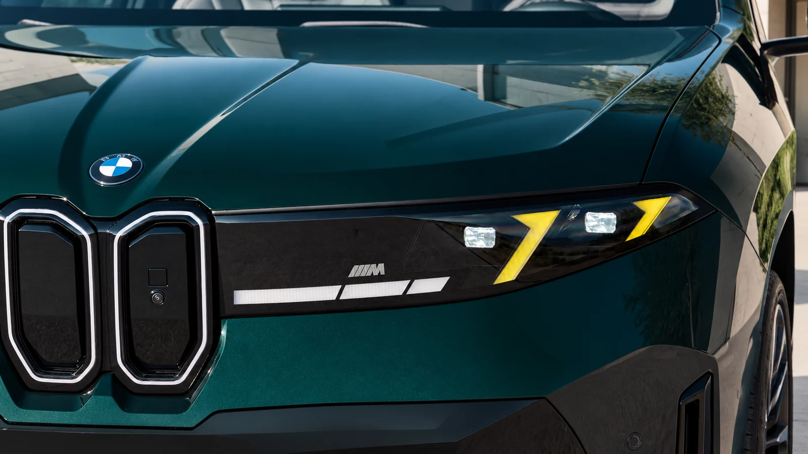
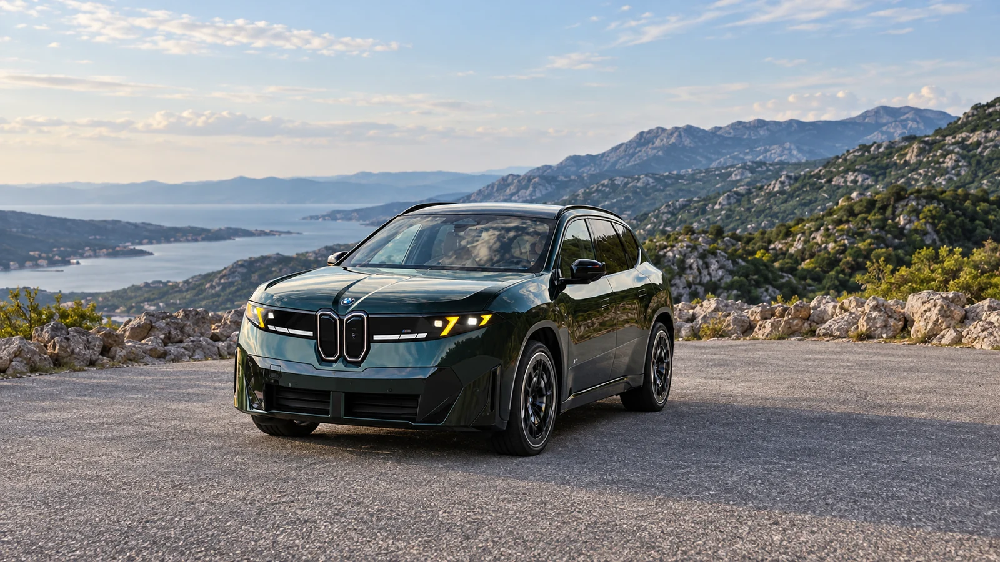

The hardware behind the headline
Adding power to an electric SUV is easy to announce. Giving the driver a reason to care about it on an ordinary road is harder. The new iX3 M60 arrives with an enormous output figure, but its more revealing features are the parts that decide how that output reaches the surface: suspension, steering, brakes and a rear differential.
BMW confirms two electric motors, 603 horsepower and 645 lb-ft of torque. Its quoted acceleration figure is 3.9 seconds to 62 mph, followed by a 149-mph maximum speed. That distinction between 60 and 62 mph matters: one test cannot be silently relabeled as the other. [1]
| Output, manufacturer claim | 603 hp / 645 lb-ft |
|---|---|
| Acceleration, manufacturer claim | 0–62 mph in 3.9 seconds |
| Production plan | Spring 2027, Debrecen |
| U.S. price / EPA range | Not announced in the cited release |
The M60 also gets adaptive M suspension, variable steering, M brakes and an electronically controlled rear differential. Standard wheels measure 21 inches, with 22-inch wheels available. Production is scheduled to begin in spring 2027 in Debrecen. [1]

Why the differential deserves attention
An acceleration time tells you how quickly a car can launch under a particular set of conditions. It does not describe whether the car settles into a corner, accepts a change of line or makes its weight easy to judge. Those are the questions that should determine whether the M60 deserves its place above the ordinary iX3.
In engineering terms, controlling the relationship between the rear wheels gives the chassis another way to manage traction and rotation. The benefit still depends on calibration. A differential is hardware with potential, not evidence that the finished SUV has the poise of a sports sedan.
The same caution applies to adaptive dampers. More adjustment can widen the distance between a comfortable commute and a firmer driving mode, but it can also produce an awkward compromise. A meaningful review will need rough pavement and repeated corners, rather than a smooth launch lane.
The questions that a launch release cannot answer
MotorTrend’s first look puts the M60 in the broader context of BMW’s Neue Klasse rollout. It is useful context for understanding the new platform, but a first look remains a preview, rather than an instrumented road test. [2]
The unresolved ownership questions are just as important. A U.S. buyer needs the EPA range for the exact wheel specification, the actual transaction price and an insurance quote. A European range figure obtained under WLTP should not be imported into a U.S. comparison as though the two procedures were interchangeable.
Wheel size is also a decision, rather than decoration. Larger wheels can change the tire bill, available winter-tire choices and the way sharp impacts reach the cabin. Before choosing the optional set, compare the complete package, including the tire specification.

What would make it a convincing M Performance SUV?
The strongest case for the M60 will be repeatable behavior: predictable braking, a useful range of suspension settings and a clear response when the driver asks for a different line. Its speed is already obvious on paper. Its character still has to be demonstrated.
For now, the launch gives us a credible set of chassis ingredients and several unanswered practical questions. That is enough to make the iX3 M60 interesting. It is not enough to recommend a configuration before pricing, certified range and independent testing arrive.
Sources & method
Checked October 12, 2026. Analysis is original; externally reported specifications and measurements are linked above. Generated imagery is illustrative, not documentary.